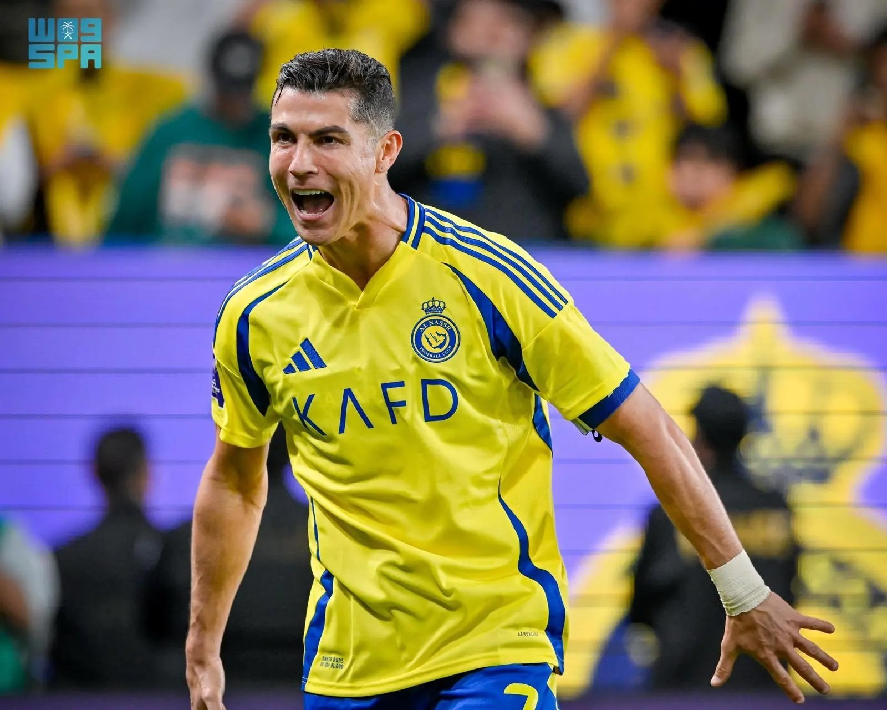
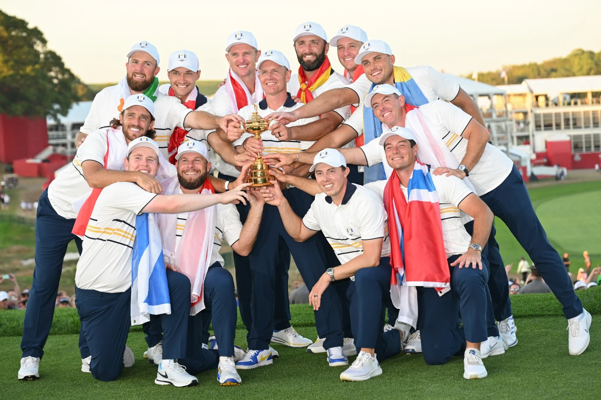
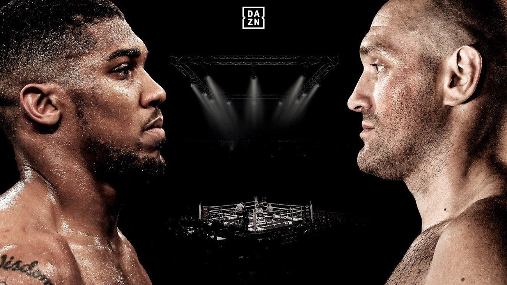
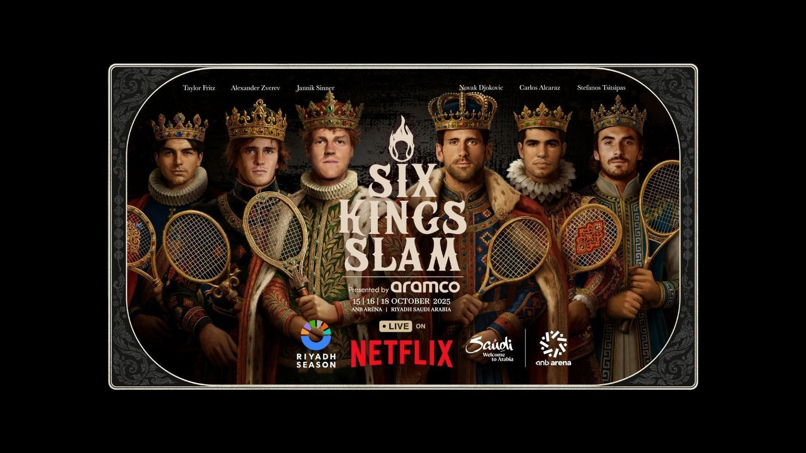
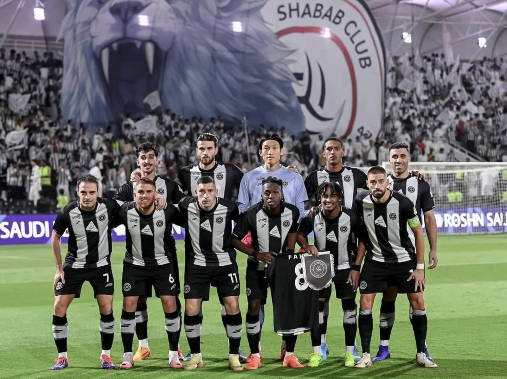

사우디, 슈퍼스타 영입으로 세계 스포츠 판도 흔들다
사우디아라비아는 최근 몇 년 사이 크리스티아누 호날두(Cristiano Ronaldo), 네이마르(Neymar), 카림 벤제마(Karim Benzema) 등 세계적인 슈퍼스타들을 잇달아 영입하며 국제 스포츠의 지형도를 뒤흔들었다. 이는 단순한 선수 계약이 아니라 '비전 2030'이 지향하는 문화·엔터테인먼트 허브 전략의 핵심 축이다. 2023년 크리스티아누 호날두가 알나스르 유니폼을 입은 순간부터 리그의 위상은 달라졌다. 호날두의 연봉은 약 2억 달러(약 2,700억 원)에 달하며 2025년 6월 계약을 연장해 2027년까지 알나스르(Al-Nassr FC)와 함께한다. 경기장에는 세계 각국의 팬들이 몰려들었고 그의 유니폼은 불티나게 팔려나갔다. 브라질의 스타플레이어 네이마르(Neymar)는 2023년 여름 파리 생제르맹(Paris Saint-Germain)에서 사우디 알 힐랄(Al Hilal SFC)로 이적하며 주목을 받았다. 이적료는 약 9천만 유로(약 1,300억 원), 연봉은 1억 달러 이상으로 알려졌다.

▲ 현 알나스르(Al-Nassr FC) 소속 호날두 — 출처: SAUDI PRESS AGENCY
골프 분야에서도 변화가 컸다. 2022년 출범한 LIV 골프는 세계적 선수 영입을 통해 PGA Tour와 새로운 경쟁 체제를 형성하며 국제 골프계의 구조적 변화를 이끌었다. 복싱과 격투기에서도 타이슨 퓨리(Tyson Fury)와 앤서니 조슈아(Anthony Joshua)의 '빅 매치 추진'이 화제를 모았고, 사우디에서 여러 초대형 흥행 대회를 실제로 개최하며 세계 격투 스포츠의 새로운 중심지로 부상했다.


▲ (좌) LIV 골프팀 — 출처: Ryder Cup; (우) 타이슨 퓨리·앤서니 조슈아 복싱 매치 — 출처: DAZN
스포츠 클럽 민영화 정책 및 미디어·이벤트·투자 전략
사우디 정부는 2023년부터 '스포츠 클럽 민영화 정책(Privatization Program)'을 본격 시행하며 국부펀드(PIF) 중심이던 구조를 민간·해외 자본에 개방했다. 이 정책의 첫 결과로 2025년 영국의 하버그 그룹(Harburg Group)이 알-홀룻(Al-Kholood) FC를 100% 인수하면서 사우디 축구 역사상 첫 해외 자본 단독 소유 클럽이 탄생했다. 또한 사우디는 방송·미디어·투자 생태계 전체로 영향력을 확장하고 있다. 2025년 들어 국부펀드 산하 SURJ Sports Investment가 글로벌 스포츠 스트리밍 플랫폼 '다존(DAZN)'에 약 10억 달러 규모의 투자를 단행하며 방송권 시장 진출을 본격화했다. 또한 ATP 투어와 협력해 중동 최초의 Masters 1000급 테니스 대회를 유치하고, e스포츠 월드컵을 총상금 7천만 달러 규모로 개최하는 등 축구·골프를 넘어 다양한 종목으로 영역을 확장하고 있다.
2025년 10월, 리야드의 ANB 아레나에서는 '식스 킹즈 슬램(Six Kings Slam)'이 열렸다. 세계 정상급 테니스 스타 노박 조코비치(Novak Djokovic)와 카를로스 알카라스(Carlos Alcaraz)를 비롯한 톱 랭커들이 출전해 3일간 열전을 펼쳤다.

▲ 식스 킹즈 슬램(Six Kings Slam) 테니스 대회 — 출처: Saudi Tourism Authority
한국 및 일반 선수의 경험으로 본 리스크
스포츠 산업이 빠르게 확장되는 과정에서는 운영상 조정이 필요한 사례가 나타나기도 한다. 국가대표 골키퍼 김승규 선수가 뛰었던 알샤바브(Al Shabab FC)의 경우 현지 언론은 일정 시점에 임금 지급이 지연된 사례가 있었다고 보도했다. 이후 구단은 선수단과의 협의를 거쳐 관련 사항을 정산하고 재발 방지를 위한 조치를 마련한 것으로 전해졌다. 이러한 사례는 급속한 산업 성장 속에서 제도적 기반을 강화해 나가는 과정이 필요하다는 점을 보여준다. 그럼에도 한국 선수들의 사우디 진출은 꾸준히 이어지고 있으며, 프로 리그뿐 아니라 e스포츠 팀 '팔콘스(Team Falcons)' 등 다양한 종목에서 활약하고 있다.

▲ 전 알샤바브 소속 김승규 선수와 팀 — 출처: 알샤바브
전략적 이점과 지속가능성의 과제
사우디의 스포츠 투자는 단기간에 국제적 주목을 끌었고 국가 브랜드와 관광 산업의 비약적 성장을 이끌었다. 특히 FIFA 클럽 월드컵, 복싱 빅 매치, 테니스 마스터스 신설 등 글로벌 메가 이벤트 유치가 이어지며 사우디는 명실상부한 스포츠 허브로 자리 잡고 있다. 하지만 전문가들은 여전히 지속가능성을 주요 과제로 지적한다. 슈퍼스타 중심의 단기 전략이 아닌 리그 경쟁력 강화·유소년 육성·선수 권리 보장이 병행되지 않으면 이 화려한 투자가 일시적 현상에 그칠 수 있다는 것이다. 사우디 스포츠 산업의 가치는 2030년까지 약 224억 달러 규모로 성장할 것으로 전망되지만 그 성장이 진정한 문화 교류와 산업 자립으로 이어질지는 앞으로의 제도적 진화에 달려 있다. 사우디의 세계 스타 영입은 단기간에 국제적 관심을 끌어올리며 스포츠·관광 산업 전반의 성장을 촉진하는 기반을 마련했다는 점에서 분명한 '명(明)'의 효과를 지닌다. 그러나 빠른 확장 과정에서 운영 안정성 확보, 제도적 기반 강화 등 '암(暗)'으로 지적되는 과제도 남아 있다.
사진 출처 및 참고자료
Rohn Malhotra (2025). SAUDI ARABIA SPORTS BUSINESS & TECH REPORT.
《Ryder Cup》, https://www.rydercup.com/
알나스르 공식 인스타그램(@alnassr), https://www.instagram.com/alnassr
알샤바브 공식 인스타그램(@alshababsaudifc), https://www.instagram.com/alshababsaudifc
《SAUDI PRESS AGENCY》, https://www.spa.gov.sa/en
《DAZN》, https://www.dazn.com
Saudi Tourism Authority, visitsaudi.com
《ALJAZEERA》 (2025. 06. 26). Cristiano Ronaldo signs new contract at Al Nassr until 2027, aljazeera.com
《The Guardian》 (2025. 05. 17). Shifting sands and Tyson Fury's £100m purse: boxing set for biggest fight of century.
《Reuters》 (2025. 10. 23). Saudi Arabia's PIF to launch new ATP Masters 1000 tournament, sportspro.com
《SportsPro》 (2025. 07. 25). Al Kholood become Saudi Pro League's first foreign-owned club, sportspro.com
《Reuters》 (2025. 04. 10). Esports World Cup returns to Riyadh with a record $70 million prize pool, arabnews.com
《Financial Times》 (2025. 02. 17). Saudi Arabia strikes $1bn deal with Leonard Blavatnik's sports streaming business.